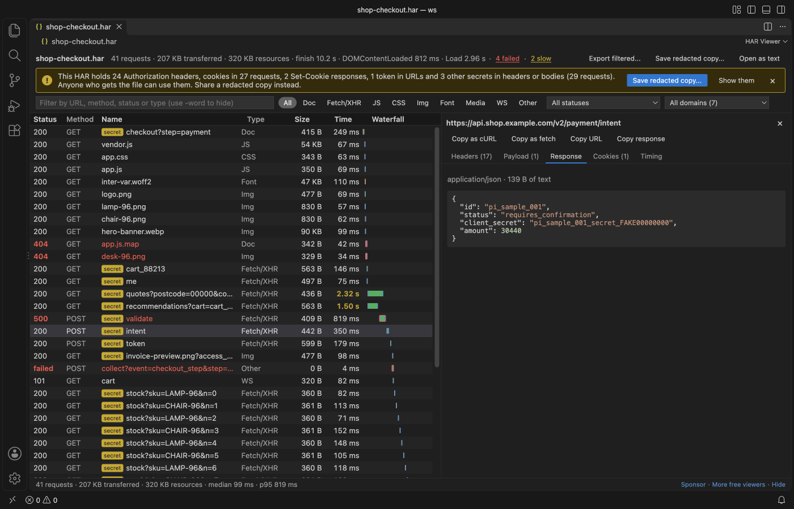
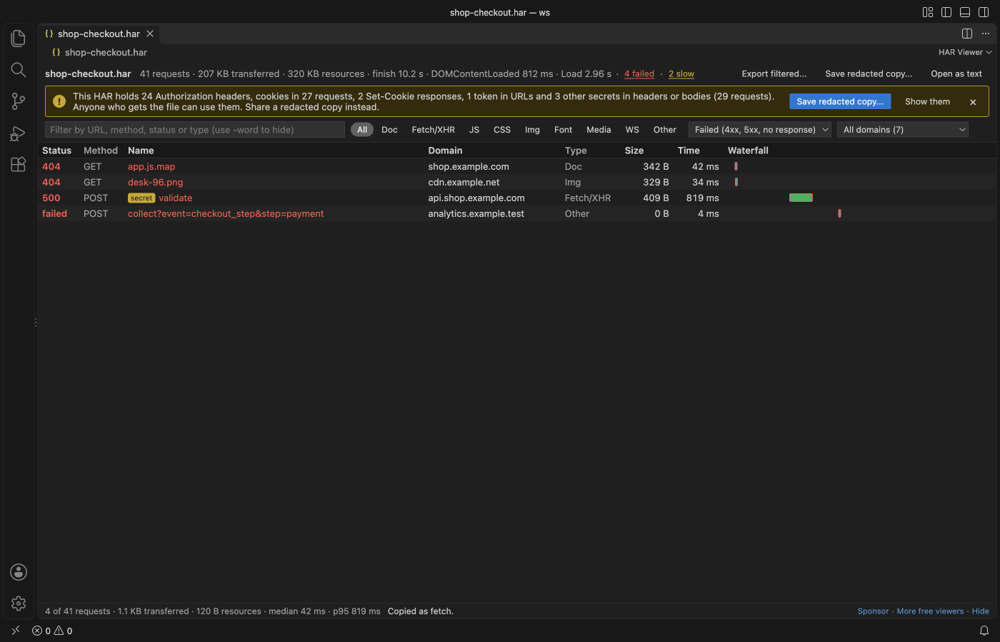
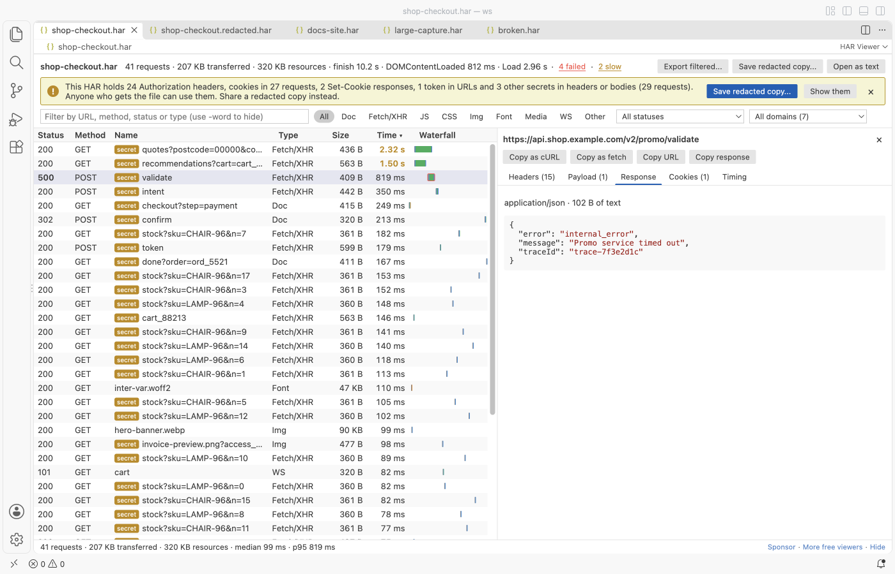

HAR Viewer & HAR File Analyzer (HTTP Archive)
HAR Viewer & HAR File Analyzer (HTTP Archive), a VS Code extension by Zovo
Open a .har file from browser DevTools in VS Code and see every request in a table with a timing waterfall, then copy any call as cURL or save a redacted copy that is safe to share.
Free, MIT license. Needs VS Code 1.90.0 or newer. Extension ID zovo.zovo-har-viewer, version 0.1.1.

The screenshot is a real VS Code 1.142 window running this extension on shop-checkout.har, a sample made by scripts/make-samples.js with fake hosts and fake tokens.
- See where the time went. Each row has a waterfall bar split into DNS, connect, TLS, waiting and download, and the summary counts failed and slow requests so you can jump straight to them.
- Read the whole exchange. Request and response headers, query string, payload, cookies and the response body, with JSON pretty-printed, form fields as a table and images shown inline.
- Share without leaking a session. A banner warns when the file holds Authorization headers, cookies or tokens, and one click writes a copy with those values replaced by
[REDACTED].
Quick start
- In Chrome, Edge or Firefox open DevTools, go to the Network tab and choose "Save all as HAR" (Safari calls it "Export HAR").
- Click the .har file in the VS Code Explorer. It opens in HAR Viewer.
Questions people ask
Is HAR Viewer & HAR File Analyzer (HTTP Archive) free?
Yes. HAR Viewer & HAR File Analyzer (HTTP Archive) is free and MIT licensed.
How do I install HAR Viewer & HAR File Analyzer (HTTP Archive)?
Click "Install in VS Code" above, or search for zovo.zovo-har-viewer in the Extensions view.
What you can do
| Task | How |
|---|---|
| Find failed requests | Click "4 failed" in the summary, or pick Failed in the status list. Failed means 4xx, 5xx or no response at all. |
| Find slow requests | Click the slow count, or sort by Time. The limit is harViewer.slowRequestMs (1,000 ms by default). |
| Filter | Type buttons (Doc, Fetch/XHR, JS, CSS, Img, Font, Media, WS, Other), status, domain and a text box. api -stock keeps rows with "api" and hides rows with "stock". |
| Inspect one request | Click a row. Tabs show Headers, Payload, Response, Cookies and Timing. Arrow keys move through the rows and Escape closes the pane. |
| Reproduce a call | Copy as cURL or Copy as fetch, the same way DevTools does it. Copy URL and Copy response are next to them. |
| Keep only some requests | Filter the table, then "Export filtered..." writes those requests to a new HAR. |
| Share a capture | "Save redacted copy..." in the banner, or the command "HAR Viewer: Save a Redacted Copy", or right-click a .har in the Explorer. |



What the redacted copy changes
- Authorization, Proxy-Authorization, API key, CSRF and similar headers become
[REDACTED]. TheBearerorBasicword stays so you can still see the scheme. - Cookie and Set-Cookie headers keep the cookie names and attributes, with each value replaced. The cookie lists in the HAR get the same treatment.
- Query, form and JSON fields with names such as
access_token,refresh_token,password,client_secret,api_keyorsession_id, and any JWT, are replaced in URLs, request bodies and text response bodies. - The original file is never changed, and a save over it is refused. A clean copy opens without the warning.
The rules are name-based. A secret stored under an unusual field name, or inside a binary body, is not found, so read the copy before you send it.

Large files
A HAR is one JSON document, so it is read whole. In the release test a 47 MB capture with 30,000 requests showed its first rows in 0.8 seconds and all rows in under 1 second, a status filter over all 30,000 took about 0.2 seconds, and the rest of VS Code never waited more than 30 ms. Only the visible rows are drawn, so scrolling stays smooth. Files above harViewer.maxFileMB (300 MB by default) show a message instead of loading. Bodies longer than harViewer.maxBodyKB are cut in the details pane, and Copy still copies the full text.
Settings
| Setting | Default | What it does |
|---|---|---|
harViewer.maxFileMB | 300 | Largest HAR that is opened |
harViewer.slowRequestMs | 1000 | Time at which a request counts as slow |
harViewer.maxBodyKB | 1024 | Longest body shown in the details pane |
harViewer.askForRating | true | Ask one time for a rating after a few days of use |
harViewer.showSupportLinks | true | Show the small Sponsor and More free viewers links in the status line |
Privacy
HAR Viewer works offline. It makes no network calls and sends no telemetry. The webview runs under a strict Content Security Policy with no remote scripts, images in a HAR are shown from the file itself, and every value from the file is shown as text, never as HTML.
Known limits
- The viewer is read-only. Edit the JSON with "Open as text" if you need to.
- WebSocket frames (
_webSocketMessages) are not listed yet. The upgrade request shows as a WS row. - Pages are not grouped. The summary uses the timings of the first page in the file.
- Redaction is pattern-based, as described above.
License
MIT
Install HAR Viewer & HAR File Analyzer (HTTP Archive)
Click the button to open VS Code and install it, or press Ctrl+P (Cmd+P on macOS) in VS Code and run ext install zovo.zovo-har-viewer.
Free, MIT license. Needs VS Code 1.90.0 or newer. Extension ID zovo.zovo-har-viewer, version 0.1.1.
Source code and issues are on GitHub.
Support this work
If this extension saves you time, you can support the work on GitHub Sponsors. Monthly tiers start at $5, and one-time tiers start at $15. Sponsorship is optional, and the tool works the same without it.